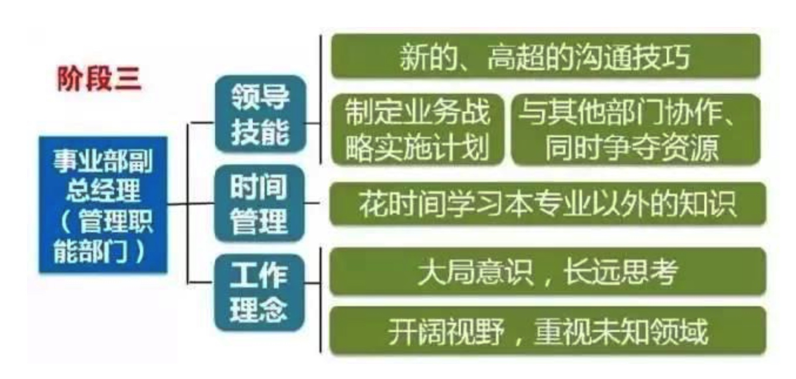
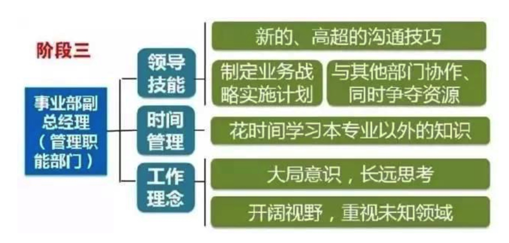
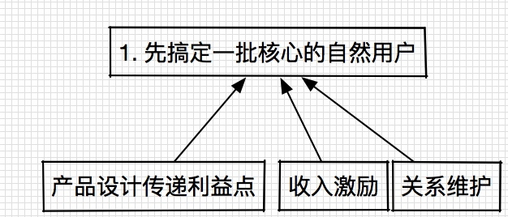

短期 上线以内容运营和用户运营为主的新的产品
中期 新产品投入市场，获取持续竞争力
长期 围绕建模，展开多平台，多产品的开发


本周工作重心在做用户使用流程的详细设计、执行分工和资源分配。
基本假设：
通过分析，收入刺激女用户的产生行为应该没有太大的问题，唯一的问题是这些刺激（人均30-50）产生的行为是否能提供足够的服务能力，这个是我最担心的一个问题，需要加紧时间进行验证。 引导逻辑将全力围绕女用户循环全力推进。
在产品上全力调整女用户体验，在运营上设计先搞定一批核心的自然用户


目前团队精力base在第一个里程碑的进程之中，产品、内容运营、生态端的进展按计划在推进中。
重新明确了产品部门为整个产品的『真实好泡』的调性负责，内容运营端则负责保持生态女快速响应的运营体系贡献内容。
开始着手考虑下阶段的具体路径，下周集中力量频繁讨论。
产品符合 『真实好泡』的调性
短期：按照产品定义出的女用户形象调性，提供并运营种子生态女持续输出内容；
长期：运营生态女输出内容。
- 完成内容运营部门对种子生态女采集的要求（数量、质量）
- 维系核心生态女团队的运转并提升核心生态女的运转效率。
经过前几周的调整，新产品部门将目前的工作重心转移产品力提升上，即整体产品及提供的女用户形象给男用户传递『真实好泡』的产品调性。本期工作重点在补齐产品力短板，虽然矫枉过正，但用户体验最终会是左右整个产品的关键点。
本周任务拆解、路径、资源都已准备就绪，并确定了短期项目的里程碑，拆解的三个部分已经开始执行。
产品符合 『真实好泡』的调性
短期：按照产品定义出的女用户形象调性，提供并运用种子生态女输出内容；
长期：运营生态女输出内容。
- 完成内容运营部门对种子生态女采集的要求（数量、质量）
- 维系核心生态女团队的运转并提升核心生态女的运转效率。
对于王楠的团队，我给其定义的是 『基于动态富媒体内容的策略储备』，计划在产品开发完成后，迅速进入策略调试阶段。个人觉得这块还是很重要的，需要布置兵力在这块进行研发。